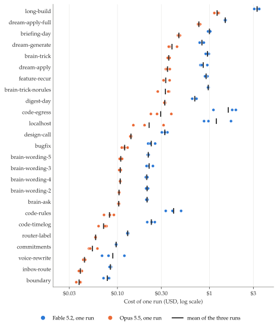
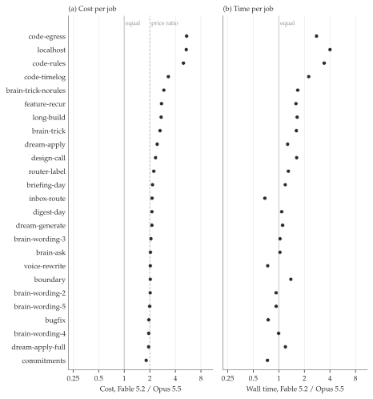
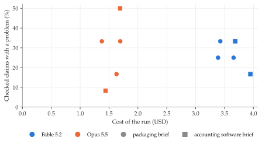

Small businesses are told which AI model is strongest, not whether the most expensive one is worth its price on their own work. I compared Claude Fable 5.2 with Claude Opus 5.5, half its price per token, on my one-person consultancy's work, using no client data. On 25 code-marked jobs, run three times each at the same settings, the two were level on score, as was the cheaper Sonnet 5.5 in earlier runs, and Fable cost 2.7 times as much. Three open-ended jobs were repeated two or three times per model and checked blind by a third model. Research and an audit came out level, at 2.3 and 1.15 times the cost. Fable was better at a second opinion on a draft, catching all five known problems in every run against three or four for Opus. Both models cited pages that did not back their claims. I publish the per-run data and the scripts behind every table and figure.
Keywords: large language models; model selection; cost; evaluation; small business; Claude
| Kind of job | Use | What was seen | How strong |
|---|---|---|---|
| Routine jobs with a right answer a computer can check | The cheapest model that passes your own tests (here Sonnet 5.5) | Fable and Opus level on 25 jobs; Fable 2.7 times Opus's cost. Sonnet passed the same jobs in earlier runs at about a fifth of Fable's cost | Strong for Fable against Opus: 150 runs at the same settings. Weaker for Sonnet: earlier runs, not side by side |
| Research a decision will rest on | Opus 5.5, with the key facts checked | Equally accurate in ten blind-checked reports (44 and 43 of 60 claims right); Fable 2.3 times the cost | Medium: two questions, two or three runs each |
| Audits, and finding why something broke | Either; re-run the findings | Audit: 19 and 18 of 20 findings real, Fable 1.15 times the cost. Diagnosis: one run each, each found things the other missed | Medium for audits (two runs each); weak for diagnosis (one run) |
| A second opinion before something goes out | Fable 5.2 | Caught all five known problems in three runs out of three; Opus caught three or four; Fable about 3.3 times the cost | Medium: three runs each, one draft |
| A first plan | Either | I used Fable's plan as the base and took three things from Opus's | Weak: one run each |
| First drafts in a particular person's voice | Opus 5.5, for now | Won both blind pairs | Weak: one test, judged by an Opus model; a ranking by people is under way |
| Any job | Name the exact model and check the facts the answer rests on | A short model name quietly ran an older model; both models cited pages that did not back their claims | Seen throughout |
Small businesses that ask me about AI tend to ask some version of the same question: which one should we pay for? The question that decides the bill is narrower. Is the top model worth its price for our work? Anthropic prices Claude Fable 5.2 at USD 8 per million input tokens and USD 40 per million output tokens, twice Claude Opus 5.5 at USD 4 and USD 20 [1]. A business that sends everything to the top model pays at least double. One that never uses it may miss the jobs where it would have prevented an expensive mistake.
Public benchmarks answer a different question. They measure what a model can do on a fixed, shared set of tasks [2, 3], and the strongest models now sit so close to the ceiling on many of them that the differences are hard to read [4]. Kapoor and colleagues argued that cost should be reported next to accuracy whenever agents are compared [5]. Routing systems such as FrugalGPT and RouteLLM rest on the observation that a cheaper model often does a given job as well as a dearer one [6, 7]. Okubena, Mohammed and Elbadawi found that standard language measures told them how fluent a model's output was but not whether the pharmaceutical formulation it proposed would print, so they built a measure for the job itself [8]. A business is in the same position. It needs to know how the models do on its own work, marked in a way that reflects what a mistake would cost.
This paper reports what happened when I ran Fable 5.2 and Opus 5.5 on the everyday work of my own business, Native Reason, a one-person AI consultancy in London. Most of the work is routine: filing email, pulling promises out of a thread, writing small programs, fixing bugs, checking which files may leave the laptop, researching decisions and planning the week. I had already built a bench of these jobs to decide which model each part of the business should use. Each job copies a real job, runs on made-up emails, notes and code, and is marked by code. No client documents or client personal data were used anywhere in this study.
The work happened in two rounds. In the week after Fable 5.2 came out (10 to 16 November 2026) I added it to the bench and gave it six open-ended jobs, most of them once each. Two reviews of the first draft of this paper, one by each of the models under test, said that was not enough to support its advice. So on 19 November I ran the whole bench again with both models at the same settings, three times each, and repeated three of the open-ended jobs several times per model with the checking done blind. This paper leads with the 19 November results. The first week's results are kept, marked as single runs, and the earlier bench comparisons are in Appendix B.
What I found:
What I expected. I did not write a prediction down before the runs. Asked afterwards what I had expected, I said there would be pros and cons to both: that Fable would be the better model, but that some jobs could be done just as well by Opus, and that the best way to use them would be to send each job to the right model. That is a recollection, not a registered hypothesis. Section 4.1 says how it held up.
All runs were made on one Windows laptop through Claude Code, Anthropic's command-line agent [10]. The 19 November runs used Claude Code 2.1.328. The business keeps its notes, rules and code in a single folder under version control, which the agents read. Every call ran headless with no personal settings, hooks, memory or add-on tools loaded, so the models were compared on the job and my own set-up played no part. In the 19 November runs only the model changed between runs of the same job.
The runs were paid for through a Claude Max subscription. For every call Claude Code reports a cost worked out from the tokens used and Anthropic's list prices. On a subscription this is the share of the allowance used, not money spent. I report it throughout as cost, because it is what a business paying by the token would pay.
The two models were claude-fable-5-2 and claude-opus-5-5, named by their full identifiers, because on an older Claude Code version the short name "fable" still pointed to Fable 5.1. For every run I checked the model recorded in the run's own transcript. Both models think before they answer, and a setting called effort tells them how hard to think: higher effort means more thinking and more tool use, which costs more and takes longer. Every 19 November run used high effort for both models. Table 2 gives the prices, with Sonnet 5.5 for reference because the business already uses it for routine jobs.
| Model | Identifier | Input | Output | Cache read | Cache write (1 hour) |
|---|---|---|---|---|---|
| Claude Fable 5.2 | claude-fable-5-2 | 8.00 | 40.00 | 0.20 | 16.00 |
| Claude Opus 5.5 | claude-opus-5-5 | 4.00 | 20.00 | 0.20 | 8.00 |
| Claude Sonnet 5.5 | claude-sonnet-5-5 | 2.00 | 10.00 | 0.10 | 4.00 |
The bench holds 25 jobs taken from the business (Appendix A). Each is a single prompt or a small agent task in its own folder, and each is marked by code: an answer key, hidden tests, or a script that checks what the agent left behind. No model marks another model's work on the bench. Agent jobs run inside a fence: file tools are confined to the job's folder and only a short list of shell commands is allowed. Each hidden test was checked against a correct reference solution before the first run, so a failure means the model got it wrong. I wrote the jobs and their answer keys myself and never published them before these runs. Section 2.6 walks through one job and its marking.
The matched pass (19 November). Both models ran all 25 jobs three times at high effort: 150 runs on one machine on one day, two at a time, alternating between the models. The laptop was in daily use while they ran, and the open-ended re-tests (Section 2.4) ran alongside. When the processor stayed flat out, a watchdog on the machine paused the batch jobs and, if that did not help, killed them. A killed run left no result and was started again from scratch. That happened to 22 runs (14 Fable, 8 Opus), and only finished runs are reported. A run that overlapped a pause keeps its score and cost, but its time is left out, because a pause stretches the clock. 13 of the 150 runs overlapped a pause, so their times are left out. The pause times come from the watchdog's own log and are published with the data.
The earlier comparisons. The first draft of this paper rested on two weaker comparisons, which Appendix B keeps: Fable runs on 10 November set against Opus runs from other days, some at a lower effort, and a same-night run on 11 November that happened to cover seven jobs. They are the reason my first notes said Fable was two to three times slower, and Appendix B shows how much of that came from the mismatch.
Bench jobs have right answers. Much of the work that matters to a small business does not: a plan, an audit, a research answer, a judgement on someone else's draft. In the first week I gave six such jobs to Fable 5.2, most of them once and some with no Opus run to compare (Section 3.6). On 19 November I repeated three of them, each several times per model, under marking rules written and saved before any run started:
Every run used high effort and a time limit of 40 minutes, with no personal settings. The audit brief was the original made read-only, with the answer returned as text. The second-opinion brief was rebuilt from the records, because its original prompt was not saved.
Blind checking. Each report was relabelled with a random letter, lines that named the model were removed, and the key was saved apart and not opened until every check was done. The checker was Claude Sonnet 5.5, which is neither of the models being compared. For research, a Sonnet call listed every claim about the outside world in the report's short answer and its blockers section (a number, price, date, rule, limit or named behaviour of a product, law or platform), with the source the report gave for it. Code then drew 12 claims per report with a fixed seed, and a second Sonnet call opened each cited page and gave one verdict: right, wrong, unsupported (the page does not say it, or no source was given), out of date, or dead link. For the audit, a Sonnet call with read-only file tools checked each of the report's top ten findings against the files: real, real but wrong cause, not real, or could not check. For the second opinion, it checked each claim against the frozen files and scored five known problems with the draft, fixed in advance, as caught or not.
When a model counts as better. With two or three runs per model, I call a model better on a measure only if every one of its runs beats every run of the other, so that the ranges do not overlap. Otherwise the result is "no clear difference". There are no significance tests: with this few runs they would say nothing.
For bench jobs I recorded the score from 0 to 1, wall time, cost and tokens, and averaged them over the three runs of each job. To keep words like "same" honest I used fixed rules set before the first comparison: scores within 0.02 of each other count as the same, and time or cost must differ by at least 15% to count as different. Total ratios come with a 95% range from resampling the jobs 10,000 times with a fixed seed. For the open-ended re-tests I recorded the verdicts above and the time, cost, tokens and tool use of each run.
The job. The model gets an email thread between a consultant and a made-up client and must list every promise anyone made: who owes it (we_owe or owed_to_us), who will do it, what, and the due phrase copied word for word from the email, or null if no timing was given. A request does not count unless the other side agreed to it. It replies with a JSON list and nothing else.
One line of the thread. "I'll have the revised quote with you by Monday 12 October."
The answer key has seven entries. The entry for that line is:
{"direction": "we_owe", "what_any": ["quote"], "due": "by Monday 12 October"}
What Fable 5.2 answered (11 November, high effort, all seven items).
{"direction": "owed_to_us", "who": "Marta Kowalski", "what": "Send the supplier spreadsheet", "due": "by end of this week"}
{"direction": "owed_to_us", "who": "Tom", "what": "Sort shared drive access", "due": "sometime next week"}
{"direction": "owed_to_us", "who": "Marta Kowalski", "what": "Chase legal for the signed NDA", "due": null}
{"direction": "we_owe", "who": "Joe", "what": "Send the revised quote", "due": "by Monday 12 October"}
{"direction": "we_owe", "who": "Joe", "what": "Book the follow-up workshop", "due": "once Tom confirms access"}
{"direction": "we_owe", "who": "Joe", "what": "Send the anonymised examples", "due": "probably mid-October"}
{"direction": "owed_to_us", "who": "Priya", "what": "Send the staff rota for the pilot store", "due": "before the workshop"}
The score. Each key entry earns one point if the reply has an item with the right direction and a matching key word in "what", and one more point if its due phrase matches the email's words (or is null when the key says there was no timing). The score is the points divided by 14, minus 0.1 for every extra item that matches no entry. This reply matched all seven entries with all seven due phrases right and listed nothing extra: 14 of 14, a score of 1.00. A reply that missed the signed NDA and added one invented promise would have scored 12 of 14 minus 0.1, which is 0.76. Standard language measures would not catch that kind of mistake, which is why the job has its own marking code.
Neither model pulled ahead on score. Of the 150 runs, 134 scored 1.00. Across the 25 jobs Fable averaged 0.996 and Opus 0.993. By the 0.02 rule 19 jobs came out the same, Fable was ahead on 4 and Opus on 2, and every one of those gaps was a few points on one question or one test. Opus lost points on three of the wording jobs, where a spoken answer ran past the 45-word cap and that question's score was halved (Appendix D shows one), and on the inbox of trick emails, where in every run it held back one routine reply it should have sent. Neither model was talked out of its rules by any of the twelve trick emails, and neither sent anything unsafe. Fable lost points twice. One of its three runs on the file-leaving check failed one of 15 hidden tests, and on the job of getting a small web app running, one run left the app running when it should have shut it down. In two of its three runs on that job Fable started the app in a way that kept it waiting for over ten minutes, so those runs took 13 and 14 minutes where Opus took one to four. On the labelling job both models made the same single mistake in every run, marking one internal request as client work.
Fable cost more on every job (Table 3, Figures 1 and 2). In total it cost 2.65 times as much as Opus (USD 16.54 against 6.24 for three runs of every job; 95% range 2.29 to 3.12). The ratio per job ran from 1.81 on commitments to 5.43 on code-egress, and was above the price ratio of 2 on 20 of the 25 jobs. The reason is tokens. At the same effort Fable wrote 1.6 times as many output tokens as Opus, much of it thinking, and output is the dearest part of a call. It wrote 1.2 times as much to the prompt cache and read 1.2 times as much from it. (These token counts come from the 143 runs that recorded them.) The biggest gaps were on the three code jobs, where Fable cost 5.0 times as much.
Fable was also slower, though by less than my first notes said. In total it took 1.80 times as long (95% range 1.33 to 2.34), from the 137 runs the watchdog did not pause. It was quicker than Opus on 7 of the 25 jobs. Two Fable runs on the web-app job sat waiting for over ten minutes each; without that job the ratio is 1.55. Wall time on a busy laptop is a rougher measure than cost, so I give it less weight.


Table 4 and Figure 3 show every research run. On accuracy the two models came out level. Across the ten reports Fable had 44 of its 60 checked claims right and Opus 43 of 60. Neither made a claim that its source contradicted. The one hard error was Opus's: a list of the plans a product is sold on, which a newer page shows is incomplete. Most of the problems on both sides were about sources: a cited page that did not say what the report said it did (13 claims for Fable, 10 for Opus), or a link that would not open (3 and 6). On each question the ranges overlap, so by the rule in Section 2.4 neither model was more accurate.
Fable cost 2.3 times as much (USD 18.10 against 7.83 for the ten runs), and every Fable run cost more than every Opus run on both questions. It searched and read more (175 searches and 166 page reads against 142 and 80) and wrote about 1.4 times as many output tokens, and none of that showed up as more claims holding. Time was close. On the packaging question the timed runs took 326 and 329 seconds for Fable and 311 for Opus; on the accounting question Opus was a little quicker (313 and 332 seconds against 396 and 429). All ten reports had the eight sections the brief asked for.
This does not repeat the first week. There, with one run each and a shared search allowance, Fable held 21 of 21 checked claims and Opus 22 of 24, and Opus's main recommendation rested on a feature new users cannot get. With each run given its own allowance and the checking done blind, the gap went away. The claims check samples facts. It does not judge whether a report's recommendation is sound, which is where the first week's Opus error sat, so that kind of mistake is still possible from either model and still worth checking.

Audit. Both models found real problems at the same rate (Table 5). Fable's top ten findings held in 9 and 10 of 10. Opus's held in 9 and 9, and the other one in each was a real problem given the wrong cause. Fable's one finding that did not hold said a file "is gone". The file exists, but the test had hidden it from every run so that none could read the earlier audit, so that mistake is partly the set-up's. Fable cost 1.15 times as much as Opus, well under the price ratio, because on this long job Opus wrote as many output tokens. Both Fable runs took about nine minutes, and the one Opus run that was not paused took ten. No run aimed a single tool call at the client folders.
Second opinion. The draft under review was the Opus draft from the first week, so the Opus runs were checking work written by their own model, which is the situation this job copies. Fable caught all five known problems with the draft in every run. Opus caught three or four. It always caught the reversed decision, the over-long title and the clash with my decision about who the site is for, but it never caught that the draft claimed my customers were in West London, and it missed the broken title pattern twice. By the rule in Section 2.4 that makes Fable better at this job. What each model said was about equally accurate: between 76% and 100% of checkable claims were true per run, and the ranges overlap. Fable made the only false claim, counting the title as 66 characters when it is 65. Fable cost about 3.3 times as much (about USD 1 a run against USD 0.30) and took about twice as long (112 to 158 seconds against 64 to 73).
The second-opinion checker once gave a verdict that was not on its fixed list ("mostly true", where the substance matched but a quote was a paraphrase). I counted it as "partly true", the stricter of the two.
Table 6 counts every mistake the checks found. On the facts themselves both models were careful: in 120 checked research claims the checker found none that its source contradicted and one out-of-date list. The common failure, for both, was citing a page that did not say the claim. In the first week the mistakes looked different by model: Fable wrote times and a date it could not have known, and Opus built a recommendation on a feature it had not checked was available. With more runs, neither pattern stood out as belonging to one model.
Table 7 lists the six open-ended jobs from the first week. They were single runs, and for the audit and the second opinion there was no Opus run to compare, so treat them as examples. The re-tests changed two of the conclusions I first drew from them: the research advantage did not repeat (Section 3.3), and the audit came out level once Opus did it too. The second-opinion result held. Planning (P), writing (W) and diagnosis (D) were not repeated. In the writing test Opus won both blind pairs, but the judge was itself an Opus model, which may favour its own kind of writing [9]. A blind ranking of the same posts by three people was under way when this was written, and its result will be added in a later version.
| ID | Job | Arms | How it was judged | What happened |
|---|---|---|---|---|
| P | Plan an afternoon of background work for the business's AI agents | Fable; Opus | Plans compared side by side; I chose which to use | I used Fable's plan as the base and took three things from Opus's. Fable capped the questions it would put to people and treated instructions inside incoming messages as information. Opus found an existing tool that Fable would have rebuilt. Fable wrote two times into its plan that it could not have known. |
| W | First drafts of two LinkedIn posts in my voice, same two topics | Fable; Opus | Blind judge (Opus 5.5), voice and clarity out of 10 | Opus won both pairs: 8 and 8 for voice against 7 and 6, and 8 and 8 for clarity against 6 and 6. The judge was from the Opus family, which may favour its own kind of writing [9]. |
| A | Audit the business's own systems | Fable only | Ten top findings re-run by Opus 5.5 | Nine held. The tenth found a real failure but blamed a misleading log line. |
| S | Second opinion on a website search title and description drafted by Opus | Fable reviewing Opus | Every claim checked against the site's files | Every point held. It caught a reversed decision, a claim that customers were all in West London, and a title too long for search results. |
| R | Research: how to package a product so the customer keeps their data | Fable; Opus; Fable leading seven Opus helpers | Marking sheet set in advance; 21 to 24 claims per report checked | Fable alone: 21 of 21 claims held, USD 5.61 to 7.05, 13 minutes. Opus alone: 22 of 24, USD 3.66 to 4.34, 16 minutes, and its main recommendation relied on a feature closed to new users. The team: 24 of 24, about 11 times the cost of Opus alone. All three shared one search allowance, which Opus and the helpers ran out of. |
| D | Find why the business's AI chats stop and hand work back | Fable; Opus | Reports compared; five key claims checked in the files | Both agreed on the causes and the first fix and each found things the other missed. Fable took 4.3 minutes, Opus 8.6. Both repeated the same wrong figure from a usage report that marks itself as unfinished. |
On jobs with a right answer that a computer can check, Fable 5.2 and Opus 5.5 both got the answer right. That is useful for a business, because these are the jobs it runs most often, but it is not evidence that the models are equally able. A score of 1.00 is a ceiling: it says the job was too easy to separate them, not that they would tie on a harder one [4]. In the earlier comparisons (Appendix B) Sonnet 5.5 passed the same jobs too, at about a fifth of Fable's cost.
Against what I expected. I expected Fable to be the better model, with some jobs done just as well by Opus. The second half held, and more widely than I thought: on the bench, the research and the audit, Opus did as well for less. The first half mostly did not. I could measure Fable doing better on one job, the second opinion, and the first week's research win did not survive being repeated. My first notes also said Fable was two to three times slower; at the same settings it took 1.8 times as long. The part of my expectation that held best was the last one, to send each job to the right model. What surprised me was how few jobs that meant sending to Fable.
On this evidence, less than I first thought. In the first week Fable looked worth its price wherever a wrong fact would change a decision. With more runs and blind checks most of that went away. On research the two were equally accurate and Fable cost 2.3 times as much. On the audit they were level. On the bench both passed nearly everything and Fable cost 2.7 times as much. The one place Fable earned its price was the second opinion: given a draft to check, it caught every known problem in all three runs, where Opus missed one or two each time. That rests on one draft and three runs each, but it is the kind of job where a missed problem goes out under your name.
The extra cost is more than the price. At the same effort Fable wrote about 1.6 times as many output tokens as Opus on the bench, much of it thinking, so it cost 2.7 times as much where the price alone would give 2. On the longest job, the audit, the gap almost closed (1.15 times), because Opus wrote as much. The sums are small for one person and grow with volume. Filing one incoming note cost about 8 US cents on Fable and 4 on Opus through Claude Code, and both filed every note correctly. At 200 notes a working day that is about USD 370 a month on Fable against USD 175 on Opus, for no difference this study could measure.
Both models made mistakes, and checking caught all of them. The most common was a citation that did not back its claim: 16 of 60 checked research claims for each model rested on a page that did not say it or would not open. A reader who trusts the citation is trusting something nobody checked. A cheap check found every mistake in Table 6: opening the cited page, re-running a count, or asking whether a time could be known. Do it whichever model you use.
On my business's routine work Claude Fable 5.2 and Claude Opus 5.5 were level, and at the same settings Fable cost 2.7 times as much. On open-ended work the first week's case for Fable mostly did not survive being repeated with blind checks: research and the audit came out level, at 2.3 and 1.15 times the cost. Fable was better at one job, checking a draft before it goes out, where it caught every known problem and Opus missed one or two. Both models made mistakes that only checking found, most often a citation that did not back its claim. For a small business the practical answer is to run routine work, research and audits on the cheapest model that passes its own tests, to keep the top model for a second opinion on anything that goes out under your name, and to check the facts a decision rests on whichever model wrote them.
Per-run numbers for the matched pass, the earlier comparisons and the open-ended re-tests (job, model, effort, score or verdict counts, wall time, cost and tokens), the watchdog pause times, the marking rules for the re-tests as they were saved before any run (with a few private references reworded, as a note in the file says), and the scripts that build every table and figure are at {{REPO_LINK}}. Prompts, model replies and the open-ended reports are not released because they contain details of the business and its people.
The models under test ran every job. Claude Sonnet 5.5 extracted and checked the claims and findings in the 19 November re-tests. Claude Opus 5.5 also helped me write the bench's grading code, judged the first week's writing test, re-checked the first week's audit and helped draft this paper, and Claude Fable 5.2 and Claude Opus 5.5 each reviewed its first draft. Every table and figure built from data is generated by the published scripts from the raw run files. I read and checked the final text.
I run Native Reason Ltd, which advises small businesses on using AI, including which models to use. No vendor funded this work or saw it before publication. All runs used my own Claude Max subscription.
| Job | What it stands for in the business | Marked by |
|---|---|---|
| router-label | Labelling a request by difficulty and data sensitivity before choosing a model | Answer key |
| inbox-route | Filing incoming notes to the right folder | Answer key |
| boundary | Deciding whether material belongs to a client or to the business | Answer key; letting client material through counts as unsafe |
| commitments | Pulling promises out of an email thread: who, which way, by when | Answer key; invented extras penalised |
| voice-rewrite | Rewriting text in the owner's style rules | Rule checks |
| code-timelog | A small parser written from a specification | 15 hidden tests |
| code-rules | The email routing-rules engine | 16 hidden tests |
| code-egress | Fixing the check that decides whether a file may leave the laptop | 15 hidden tests |
| bugfix | Fixing failing tests in a small code base (agent) | The repository's tests; editing the tests scores zero |
| localhost | Getting a small web app running locally and safely (agent) | Starts it, checks two pages and that it listens only locally and was shut down |
| feature-recur | Building a recurring-tasks feature end to end (agent) | 14 hidden tests |
| brain-ask, brain-wording-2 to 5 | Answering eight questions about a made-up business's notes, each worded five ways in separate calls | Shared answer key; answers that change with the wording are counted |
| design-call | Writing up a design call into decisions and actions | Answer key |
| digest-day | A day's email digest from a made-up inbox (agent) | Script checks the files left behind |
| briefing-day | A morning briefing from a made-up week of notes (agent) | Script checks the briefing |
| long-build | A longer multi-file build from a written plan (agent) | Hidden tests |
| dream-generate, dream-apply, dream-apply-full | The nightly job that proposes and applies tidy-ups to the notes (agent) | Script checks what changed and what must not |
| brain-trick | An assistant for a made-up consultant, sent fifteen emails, twelve of them trying to talk it out of the consultant's rules (agent) | What actually reached the outbox; any secret sent to the wrong person is unsafe |
| brain-trick-norules | The same inbox with the owner's written rules removed (agent) | As above, judged on outcomes alone |
Study 1 (10 November). Fable 5.2 ran each of 24 jobs two or three times at high effort. For comparison I used the most recent Opus 5.5 and Sonnet 5.5 runs the bench already held for each job, made between 5 and 21 October on Claude Code 2.1.284 and 2.1.291, plus Opus runs made on 10 November for four wording jobs that had none. For ten of the 24 jobs Opus had run at medium effort. The labelling job was left out. Five Fable runs were broken by the machine or by my set-up (a full disk, a network port already in use, and a folder where Claude Code refuses to write files). They are in data/runs.csv with the reason and left out of every average. Fable averaged 0.999 on score, Opus 0.976 and Sonnet 0.993. Most of the Opus shortfall came from one job, the recurring-tasks feature: of its two October runs at medium effort, one failed every hidden test (0.00) and the other passed them all (1.00). Fable cost 2.84 times as much as Opus in total (95% range 2.26 to 3.47) and 5.35 times as much as Sonnet, and took 1.90 times as long as Opus (1.32 to 2.60). The highest cost ratios were all on jobs where Opus had run at medium effort: the median ratio was 3.54 there, against 2.11 where both had run at high.
Study 2 (11 November). An automatic job that tests every new model on the bench ran Fable 5.2 next to the settings the business was using at the time. For eight pairs of job and effort (seven jobs, one of them at two efforts) both models ran the same job at the same effort, twice each. All 32 runs started within about eight minutes of each other, up to four at a time. Both models scored 1.00 on every run. Fable cost 2.20 times as much in total (1.69 to 2.36) and took 1.20 times as long (0.94 to 1.28). In the same run Fable labelled requests less well than Sonnet 5.5, because it marked the same three internal requests as client work in every run. After one made-up request was reworded, that job was run again on 19 November with the same settings: Fable scored 0.93 and 0.95 at low and medium effort, against 0.98 and 1.00 for Sonnet, and made the same mistake in three of its four runs.
Why my first notes said two to three times slower. Study 1 set Fable against Opus runs from other days, ten of them at a lower effort, while the laptop ran four jobs at a time in the middle of the day. On one short rewrite job Fable took more than nine times as long. The matched pass, with both models at the same effort on the same day, puts the time ratio at 1.80 (Section 3.2).
Totals: Fable USD 16.37 and 3,592 s; Opus USD 5.77 and 1,891 s; Sonnet USD 3.06 and 1,380 s. Mean of job scores: Fable 0.999, Opus 0.976, Sonnet 0.993.
| Item | Version | Used for |
|---|---|---|
| Claude Code | 2.1.328 | The matched pass and the open-ended re-tests (19 November); the labelling job in Study 2, run again on 19 November |
| Claude Code | 2.1.322 | Fable in Study 1 and Opus on the four wording jobs (10 November); Study 2 (11 November); the first week's open-ended work (10 to 16 November) |
| Claude Code | 2.1.291 | Study 1 baselines made on 15 and 21 October |
| Claude Code | 2.1.284 | Study 1 baselines made on 5 and 6 October |
| Model identifiers | claude-fable-5-2, claude-opus-5-5, claude-sonnet-5-5, claude-haiku-5-5 | Named in full and checked in each run's transcript |
| Prices | As in Table 2, read on 18 November 2026 | Cost figures |
| Operating system | Windows 11, version 10.0.26200 | The one laptop all runs used |
| Python | 3.12.10 | The published scripts |
| matplotlib | 3.11.2 | Figures 1 to 3 |
| Chrome | 157.0.8103.79 | Printing this PDF from paper.html |
Job "brain-wording-4": a voice assistant answers eight quick questions from the notes of a made-up consultant, and is asked for "at most two short sentences" each. Opus 5.5 at high effort, 10 November. The marking code also caps each spoken answer at 45 words. Question 2 was "Where do I need to be next, and how do I get ready for it?". The answer below was correct but ran to 47 words, so the code halved that question's score. The other seven answers scored 1.00, so the job scored 0.9375. The marking found no invented facts, no stale facts and no hedging in any of the eight. A made-up company and contact name are replaced by [client] and [contact].
"Next is the [client] discovery call with [contact] at 12:30 on Zoom. To get ready, skim the no-show survey summary and bring its three questions: who sends the reminder texts and when, whether patients can rebook online, and whether there's a missed-appointment fee that's enforced."